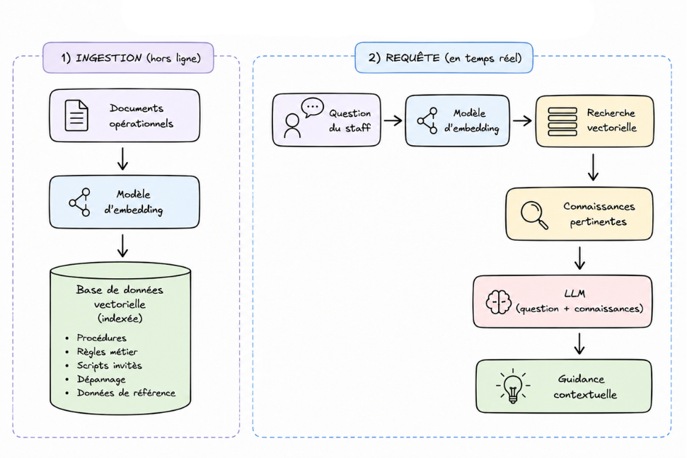
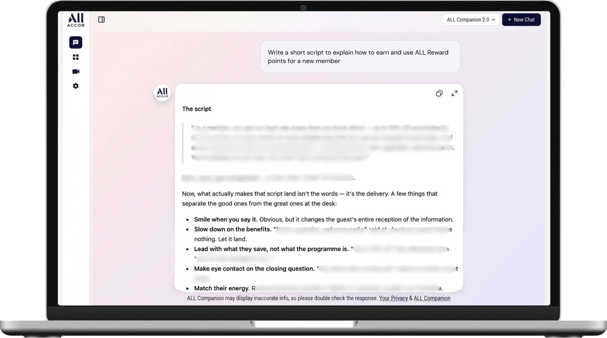

Cas 2 · Accor
Concevoir un agent IA d'aide à la performance pour les équipes hôtelières
01 · Contexte
Les équipes avaient besoin d'accéder rapidement aux règles ALL pendant l'échange client, depuis une interface unique plutôt qu'une multitude de ressources dispersées.
Options envisagées
E-learning complémentaire
L'information change trop vite
FAQ statique
Maintenance lourde, faible capacité de recherche
Aide-mémoire PDF
Non contextuel, non consultable à la demande
Décision retenue
Un agent RAG
Une réponse contextuelle, sourcée et accessible directement dans le flux de travail.
02 · Conception de la solution
Concevoir un assistant fiable, ancré dans les connaissances métier.
Décision de conception
Architecture
Comment le système répond à une question en temps réel.

Le livrable · ALL Companion


03 · Impact
Valider la solution avant son déploiement.
Pilote terrain
3 hôtels
20 utilisateurs
20 utilisateurs
Agent RAG testé en conditions réelles auprès d'équipes Front Office.
Retours utilisateurs collectés, analysés et intégrés dans la version finale.
Ce que les tests ont montré
Passage à l'échelle & KPI
3 000
hôtels ciblés
Déploiement prévu vers le périmètre européen ALL.
Objectif business
−5 % de plaintes clients liées au programme ALL.
“L'agent nous aide à retrouver rapidement les bonnes règles ALL et ça fait gagner du temps à mes équipes.”